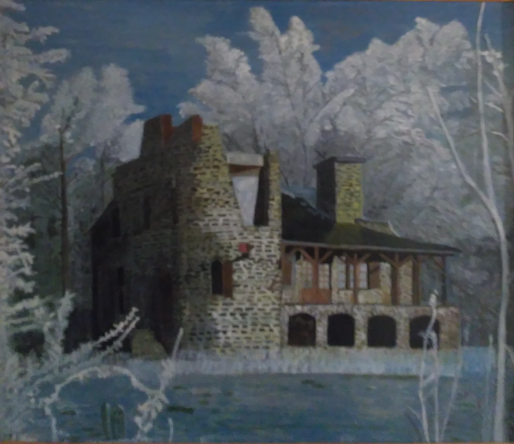

Разукрасилась зима: На уборе бахрома Из прозрачных льдинок, Звёздочек-снежинок. Вся в алмазах, жемчугах, В разноцветных огоньках, Льёт вокруг сиянье, Шепчет заклинанье: – Лягте, мягкие снега, На леса и на луга, Тропы застелите, Ветви опушите! На окошках, Дед Мороз, Разбросай хрустальных роз Легкие виденья, Хитрые сплетенья. Ты, метелица, чуди, Хороводы заводи, Взвейся вихрем белым В поле поседелом! Спи, земля моя, усни, Сны волшебные храни: Жди, в парчу одета, Нового рассвета! М. Пожарова